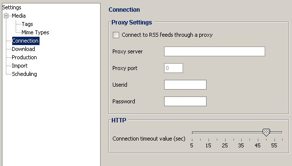

Allows you to adjust the Internet connection settings. This includes the settings for a Proxy as well as the timeout for Internet connections.

The Connection view contains these fields:
| Connect to RSS feeds through a proxy | If checked the RSS feeds are downloaded through the given below. jPodder needs to know that the proxy in order to use the proxy as client instead of the RSS provider. |
| Proxy server | Server name of the proxy |
| Proxy port | Port of the proxy |
| User Id | User name if the proxy requires authentication |
| Password | Password if the proxy requires authentication |
| (HTTP) Connection timeout value (sec) | The allows you to set a specific timeout where the application assumes a connection is stale and terminates it. If you have a slow connection you can increase the timeout in order to reduce the number of terminated connections but it also could mean that your application becomes less responsive. The timeout value is specified in seconds. |